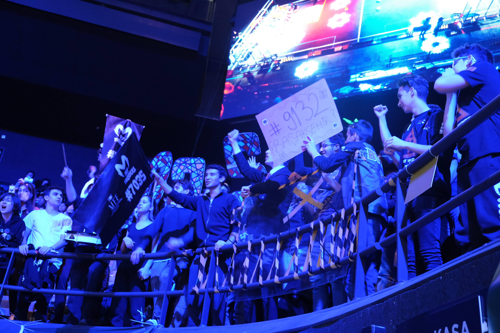
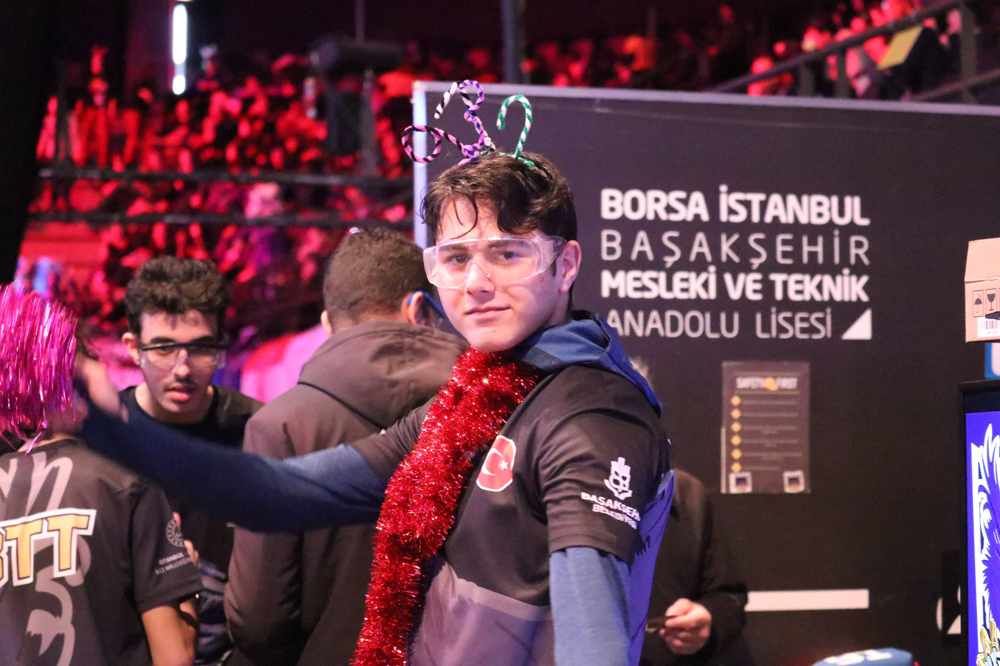
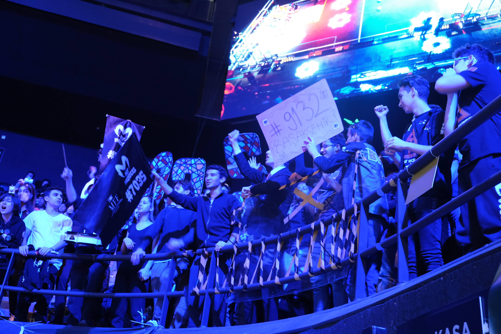
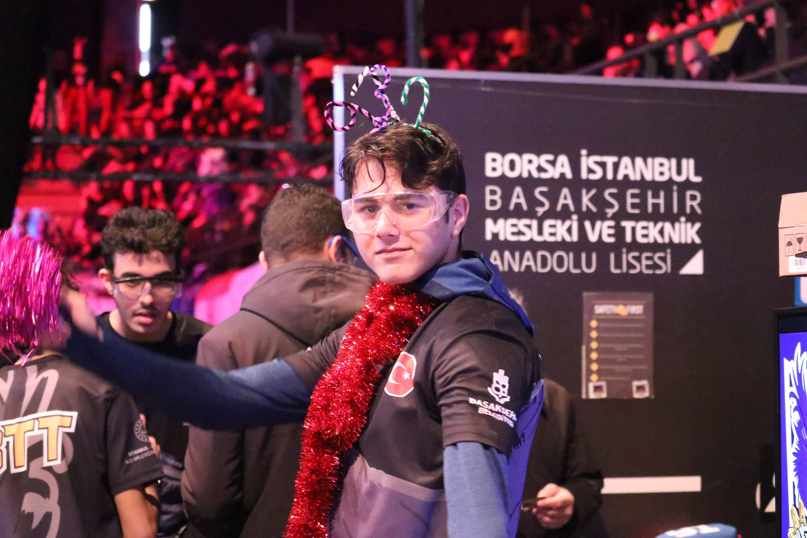

Hakkımızda
Başakşehir Teknoloji Takımı, sunulan nitelikli teknoloji ve inovasyon eğitimlerinin sorumluluğunu alarak sürekli öğrenen ve kendisini geliştiren, sabırlı, disiplinli, özverili, takım çalışmasına yatkın öğrencilerden oluşan bir ekiptir.
Başakşehir Teknoloji Takımı ilçemizin farklı okullarından seçilmiş öğrenciler tarafından oluşmaktadır. Mühendisliği, dostluğu, liderliği, takım çalışmasını aşılamak için çalışmaktadır. Borsa İstanbul Başakşehir Mesleki ve Teknik Anadolu Lisesi Elektrik-Elektronik Teknolojisi öğretmenleri tarafından yapılacak atölye çalışmaları ile bahsi geçen alanlarda yarışmalara katılım sağlamak üzere yoğun bir proje geliştirme faaliyeti yapılacaktır. Bu kapsamda öğrencilerimiz aldıkları uygulamalı teknoloji eğitimi ile hem kendi gelişimlerini sağlayacak hem de katılım sağladıkları yarışmalar ile sosyal becerilerini ve özgüvenlerini arttırmış olacaklardır.
Sadece Teknoloji Mi?
BTT takım olarak sadece teknoloji konusunda değil çoçukların kişisel becerilerini duygularını ifade edebilme yeteneklerini ve düşüncelerini belirtebilme, bir takım ruhunu yaklaya bilme, topluma uyum sağlama,kişisel el becerileri, liderlik, yardım severlik vb. duygu ve düşünceleri aşılıyor ve değerli bireyleri topluma kazandırıyor.
Neden FRC?
Çünkü FRC yarışması hiçbir maddi kazancı olmamasına rağmen biz gençlere mühendislik sevdasını aşılamak ayrım yapmamak bir takım çalışması takımla bir bütün olmayı öğretmeye ve bunun gibi saygı duymayı rakiblerimizle yardımlaşmayı önemseyen herkesin birlik ve beraberlik içinde asıl amacı eğlenmek olan bir yarışmadır.
Neden Biz?
Biz BTT olarak çok zor aşamalardan geçtik bizi okullarımızdan seçerken olsun mülakatlarda olsun hepimiz özenle seçildi ayrım yapılmadan takıma yararı olucak başarısı olsun hayalleri olsun ufku geniş gençleri ve böyle alanlarda ilerlemek isteyen gençleri seçtiler. Biz ilk senemizde zorlu rakiplerimiz olduğu biz 1 tane vida ararken onların çeşitli motorlarla katıldığı yarışmada FİNALİST olduk ve bu çok büyük bir başarı bizim için. Biz böyle zorlu şartlarda FİNALİST oluyorsak sponsorluklar bulduğumuzda bizi desteklediğinizde çok daha iyi yerlere gelebileceğimizi düşünüyoruz.